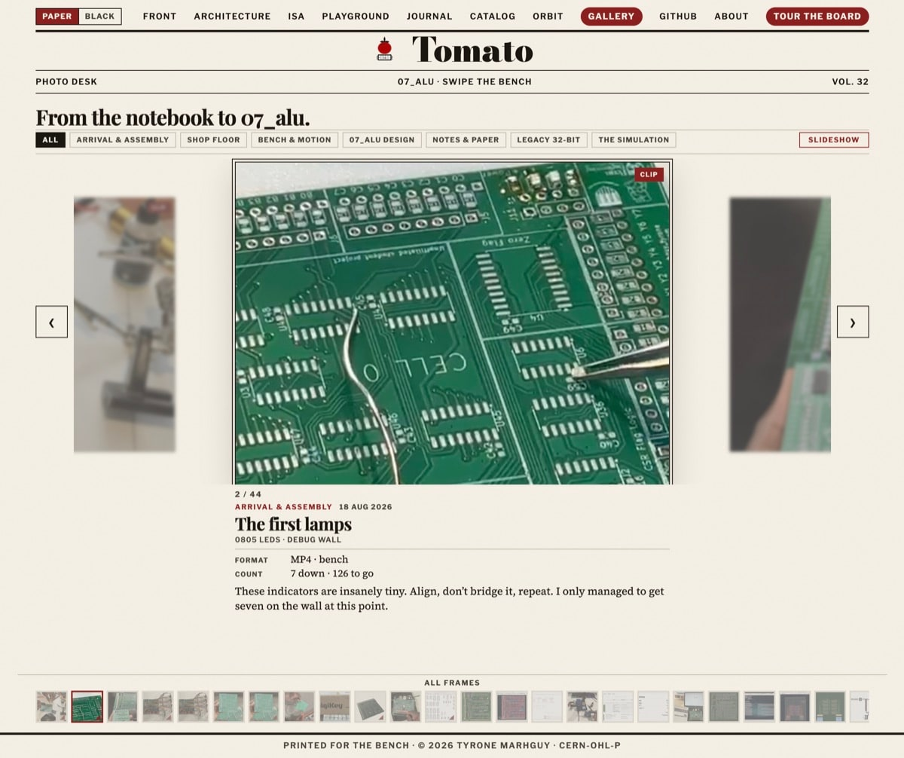

Dispatch · The paper
The gallery paradox
I wanted a full documentary of the build. The paper needed a slideshow with captions. The slideshow won.
I added a gallery to the site and immediately hit a conflict. One impulse wanted a comprehensive documentary of the whole journey. Another wanted LinkedIn posts and a quiet paper. The gallery had to pick a side.
For now it is a slideshow. I tried ambitious layouts, including an issue-style magazine format. They looked great — and they felt like a second website nested inside the first.

I even added a “save scroll” option so you could keep it open like a real magazine. Amazing feature. Same problem. So I reverted to the default: a straightforward gallery with minimal text under each plate, enough to show what was happening on the timeline. Sometimes simplicity is best.
See it live: the gallery. The vault still holds every earlier choice — including the ones that got cut.